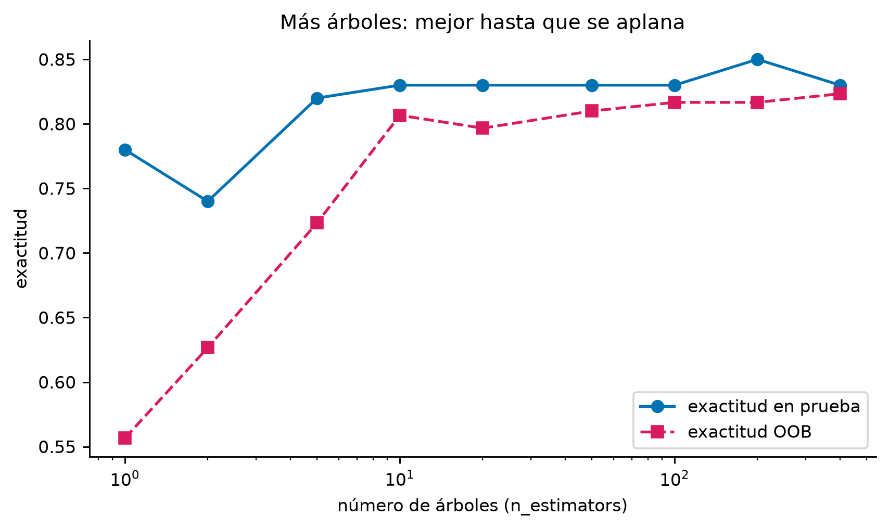
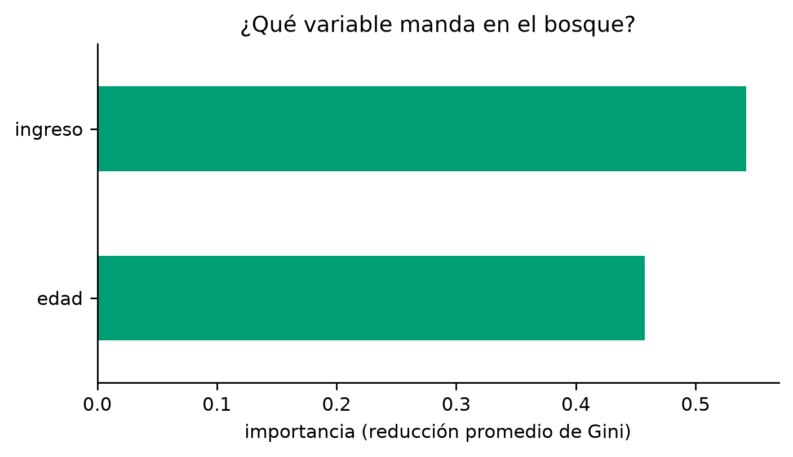
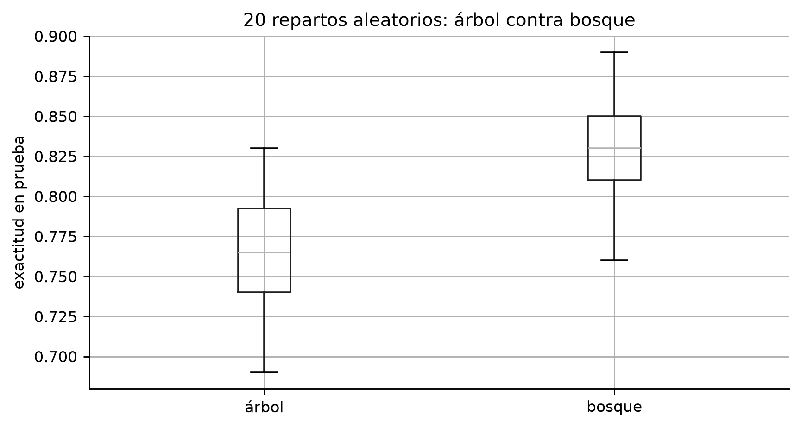

03 · Random Forest: muchos árboles, por qué funcionan y cómo se usan
Machine Learning · UTB 2026-II · RandomForestClassifier paso a paso sobre cartera_curso.csv
Fecha de publicación
9 de octubre de 2026
1 Para qué sirve este documento
Todo lo del bosque aleatorio (RandomForestClassifier) que puede caer en el parcial: qué es, qué argumentos tiene y qué hace cada uno, cómo entrenarlo y evaluarlo sobre datos/cartera_curso.csv, el error OOB (la “prueba gratis”), el efecto del número de árboles y de max_features, la importancia de variables, y la comparación clásica un árbol contra un bosque.
Conexión con el paper leído en clase (Shotton et al., Real-Time Human Pose Recognition in Parts from Single Depth Images): ellos clasifican píxeles de imágenes de profundidad con un bosque aleatorio de árboles de decisión. Su ecuación (2) es literalmente la predicción de un Random Forest de clasificación: promediar la distribución de cada hoja sobre los \(T\) árboles,
y su algoritmo de entrenamiento es el mismo del árbol de la actividad, con la ganancia de información\(G(\varphi) = H(Q) - \sum_{s \in \{l,r\}}
\frac{|Q_s(\varphi)|}{|Q|} H(Q_s(\varphi))\) evaluando candidatos aleatorios (porque probar TODOS los cortes con millones de píxeles sería imposible).
2 La idea en 60 segundos
Un solo árbol de decisión, sin límites, memoriza el entrenamiento (75 hojas, brecha +0.210 en el laboratorio). La receta del bosque:
Bootstrap: para cada árbol se toma una muestra CON reemplazo de los datos; cada árbol ve una versión distinta (y sobran clientes sin usar: los out-of-bag, ~37%).
Aleatoriedad por corte (max_features='sqrt'): en cada nodo solo se sortea un subconjunto de variables entre las que buscar el corte. Así los árboles salgan distintos entre sí (decorrelacionados).
Promedio/votación: cada árbol vota por una clase y gana la mayoría (o se promedian las probabilidades).
Resultado: la varianza del conjunto es mucho menor que la de un árbol solo, y la exactitud en prueba sube (0.765 → 0.831 en el laboratorio). El precio: ya no se puede leer como reglas.
3 Setup
# =====================================================================# IMPORTS: igual base que el documento 02 + RandomForestClassifier.# =====================================================================import numpy as npimport pandas as pdimport matplotlib.pyplot as pltfrom IPython.display import Markdown, displayfrom sklearn.tree import DecisionTreeClassifierfrom sklearn.ensemble import RandomForestClassifierfrom sklearn.model_selection import train_test_splitdef texto(md):"""Imprime Markdown enriquecido en el output.""" display(Markdown(md))plt.rcParams.update({"figure.dpi": 130, "font.size": 9,"axes.spines.top": False, "axes.spines.right": False})# ---------------------------------------------------------------------# Los datos y el MISMO reparto del laboratorio (75/25 ordenado por id).# CAMBIA AQUÍ la ruta si el archivo vive en otro lado.# ---------------------------------------------------------------------datos = pd.read_csv("datos/cartera_curso.csv", sep=";", decimal=",")V, OBJ = ["edad", "ingreso"], "tomo_credito"d = datos.sort_values("id_cliente").reset_index(drop=True)corte =int(np.floor(0.75*len(d)))X_train, y_train = d.loc[:corte-1, V].values, d.loc[:corte-1, OBJ].valuesX_test, y_test = d.loc[corte:, V].values, d.loc[corte:, OBJ].valuesprint("train:", X_train.shape, "test:", X_test.shape)
train: (300, 2) test: (100, 2)
4 Los argumentos del bosque
# Todos los argumentos de RandomForestClassifier "de fábrica".# Los que NO son del árbol suelto son los 4 primeros:# n_estimators, bootstrap, oob_score y max_features (que aquí viene 'sqrt').ser = pd.Series(RandomForestClassifier().get_params())ser.head(19).to_frame("valor de fábrica")
valor de fábrica
bootstrap
True
ccp_alpha
0.0
class_weight
None
criterion
gini
max_depth
None
max_features
sqrt
max_leaf_nodes
None
max_samples
None
min_impurity_decrease
0.0
min_samples_leaf
1
min_samples_split
2
min_weight_fraction_leaf
0.0
monotonic_cst
None
n_estimators
100
n_jobs
None
oob_score
False
random_state
None
verbose
0
warm_start
False
argumento
de fábrica
qué controla
cuándo tocarlo
n_estimators
100
cuántos árboles tiene el bosque
más = mejor y más caro; a partir de algunos cientos la mejora se aplana
bootstrap
True
si cada árbol se entrena con muestra con reemplazo
False solo en casos especiales
oob_score
False
calcular la exactitud OOB al entrenar
True para evaluar sin separar prueba
max_features
'sqrt'
cuántas variables se sortean en cada corte
'sqrt' estándar en clasificación; subirlo = árboles más parecidos
n_jobs
None
cuántos núcleos usar en paralelo
-1 = todos (acelera mucho)
class_weight
None
peso de clases
'balanced' con clases raras
random_state
None
semilla de todo lo aleatorio
fijarla para reproducir
max_depth, min_samples_leaf, ccp_alpha, …
heredados
lo mismo que en un árbol
se pueden ajustar, pero el bosque es menos sensible: la aleatoriedad ya lo protege del sobreajuste
Ojo: el árbol suelto NO tiene n_estimators ni bootstrap; y max_features en el árbol es None (mira todas las variables en cada corte) mientras en el bosque es 'sqrt' (cada corte mira solo algunas, para que los árboles salgan distintos). Esta es la pregunta trampa típica del parcial.
5 El bosque básico
# =====================================================================# Entrenar el bosque y evaluarlo. CON OOB: cada árbol deja fuera ~37%# de los clientes (los out-of-bag); predecir sobre ellos es una# 'prueba gratis' que no gasta el conjunto de prueba.# CAMBIA AQUÍ n_estimators, max_features o random_state para experimentar.# =====================================================================bosque = RandomForestClassifier( n_estimators=200, # CUÁNTOS ÁRBOLES: el parámetro estrella del bosque max_features="sqrt", # variables sorteadas por corte: sqrt(2) = 1 aquí bootstrap=True, # muestra con reemplazo por árbol (lo usual) oob_score=True, # calcular la exactitud OOB automáticamente n_jobs=-1, # usar todos los núcleos del CPU (paralelo) random_state=0) # semilla: MISMO bosque cada vez que se correbosque.fit(X_train, y_train)print(f"Exactitud en entrenamiento : {bosque.score(X_train, y_train):.3f}")print(f"Exactitud en prueba : {bosque.score(X_test, y_test):.3f}")print(f"Exactitud OOB (gratis) : {bosque.oob_score_:.3f}")# La OOB se acerca a la de prueba: sirve cuando no hay datos de prueba.
Exactitud en entrenamiento : 0.980
Exactitud en prueba : 0.850
Exactitud OOB (gratis) : 0.817
# El bosque predice VOTANDO: cada árbol baja al cliente por su propio# camino y vota; gana la mayoría. Con predict_proba se promedian las# probabilidades de las hojas (la ecuación 2 del paper).nuevo = pd.DataFrame({"edad": [48], "ingreso": [7.2]}) # CAMBIA AQUÍ el clienteprint("votos por clase (de 200 árboles):", bosque.predict_proba(nuevo.values)[0]) # proporción de votos = probabilidad
votos por clase (de 200 árboles): [0.1 0.9]
6 El efecto del número de árboles
# =====================================================================# ¿Cuántos árboles hacen falta? Entrenamos bosques de tamaños crecientes# y registramos exactitud en prueba y OOB. La curva sube rápido y luego# se aplana: esa meseta es la señal de que ya hay suficiente bosque.# =====================================================================tamannos = [1, 2, 5, 10, 20, 50, 100, 200, 400] # CAMBIA AQUÍ los tamañoscurva = []for k in tamannos: b = RandomForestClassifier(n_estimators=k, oob_score=True, n_jobs=-1, random_state=0).fit(X_train, y_train) curva.append({"n_arboles": k,"prueba": b.score(X_test, y_test),"oob": b.oob_score_})curva = pd.DataFrame(curva)fig, ax = plt.subplots(figsize=(7.5, 4))ax.plot(curva["n_arboles"], curva["prueba"], "o-", color="#0072B2", label="exactitud en prueba")ax.plot(curva["n_arboles"], curva["oob"], "s--", color="#D81B60", label="exactitud OOB")ax.set_xlabel("número de árboles (n_estimators)")ax.set_ylabel("exactitud")ax.set_xscale("log") # escala log para ver los tamaños chicosax.legend()ax.set_title("Más árboles: mejor hasta que se aplana");

Lectura: con 1 árbol es literalmente un árbol suelto (con aleatoriedad de variables); con 10–50 ya se estabiliza; a partir de ahí se gana poco. Contra más árboles nunca ‘empeora’ en serio — solo cuesta más tiempo.
7 El efecto de max_features
# =====================================================================# max_features controla cuánto se PARECEN los árboles entre sí:# None -> cada corte mira TODAS las variables: árboles parecidos# (el mismo corte fuerte domina en todos) = bosque aburrido# sqrt -> cada corte sortea 1 de las 2 variables: árboles distintos# Con 2 variables la diferencia es sutil; con cientos es dramática.# =====================================================================filas = []for mf in [None, "sqrt", 1]: # CAMBIA AQUÍ los valores a comparar b = RandomForestClassifier(n_estimators=200, max_features=mf, oob_score=True, n_jobs=-1, random_state=0).fit(X_train, y_train) filas.append({"max_features": str(mf),"prueba": b.score(X_test, y_test),"oob": b.oob_score_,"dispersion_arboles": np.std([e.score(X_test, y_test)for e in b.estimators_])})display(pd.DataFrame(filas).round(3))
max_features
prueba
oob
dispersion_arboles
0
None
0.80
0.820
0.033
1
sqrt
0.85
0.817
0.040
2
1
0.85
0.817
0.040
Nota: dispersion_arboles mide cuánto varía la exactitud entre los árboles individuales del bosque — con None los árboles son casi clones dispersos; con sorteos de variables son más variados y el promedio gana.
8 Importancia de variables del bosque
# feature_importances_ del bosque = promedio de la reducción de Gini que# logró cada variable en TODOS los nodos de TODOS los árboles. Es más# estable que la de un árbol solo (que puede guiarse de un solo corte).imp = pd.Series(bosque.feature_importances_, index=V).sort_values()fig, ax = plt.subplots(figsize=(6, 3))imp.plot.barh(ax=ax, color="#009E73")ax.set_xlabel("importancia (reducción promedio de Gini)")ax.set_title("¿Qué variable manda en el bosque?");

9 Un árbol contra el bosque, con detalle
# =====================================================================# El experimento del laboratorio, ahora con gráfico: 20 repartos# aleatorios distintos; en cada uno entrena UN árbol de fábrica y UN# bosque de 200 de fábrica, y anota la exactitud en prueba.# =====================================================================filas = []for s inrange(20): # CAMBIA AQUÍ cuántos repartos probar A, B, a, b = train_test_split(datos[V].values, datos[OBJ].values, test_size=0.25, random_state=s) filas.append({"árbol": DecisionTreeClassifier(random_state=0).fit(A, a).score(B, b),"bosque": RandomForestClassifier(n_estimators=200, random_state=0, n_jobs=-1).fit(A, a).score(B, b)})comp = pd.DataFrame(filas)resumen = pd.DataFrame({"modelo": ["Árbol (1)", "Bosque (200)"],"media": [comp["árbol"].mean(), comp["bosque"].mean()],"desviación": [comp["árbol"].std(), comp["bosque"].std()]}).round(3)display(resumen)fig, ax = plt.subplots(figsize=(7.5, 3.8))comp.boxplot(ax=ax) # la caja del bosque queda más arribaax.set_ylabel("exactitud en prueba")ax.set_title("20 repartos aleatorios: árbol contra bosque");
modelo
media
desviación
0
Árbol (1)
0.765
0.037
1
Bosque (200)
0.830
0.037

Cómo defender la tabla: el árbol solo promedia ~0.765 con desviación ~0.037; el bosque ~0.831 con desviación similar. Promediar muchos árboles, cada uno entrenado con una muestra distinta, compensa la tendencia de cada árbol a memorizar (reduce la varianza, no el sesgo).
10 Qué puede caer del paper en el parcial
Del paper de Shotton et al. (Kinect), los puntos “citables”:
Bosque = conjunto (ensemble) de \(T\) árboles, cada uno con nodos de pregunta (split) y hojas (leaf); la clasificación final promedia las distribuciones de las hojas alcanzadas en cada árbol (su ecuación 2).
Entrenamiento por nodo: proponer candidatos aleatorios \((\varphi, \tau)\) (característica + umbral), partir los ejemplos, elegir el de mayor ganancia de información (entropía), y repetir si la ganancia alcanza y no se pasa la profundidad máxima.
Hallazgos del paper: la exactitud sube con el número de imágenes de entrenamiento (logarítmico) y con la profundidad de los árboles; con pocos datos, árboles profundos sobreajustan (a partir de profundidad ~17 con 15k imágenes), pero con 900k imágenes árboles de profundidad 20 siguen mejorando. O sea: la profundidad peligrosa depende de cuántos datos haya — la misma lección del laboratorio con max_depth=None.
En el Kinect usaron solo 3 árboles de profundidad 20 por velocidad: con MUCHOS datos y aleatoriedad por nodo, pocos árboles bastan.
11 Resumen ejecutivo (para el parcial)
Pregunta corta
Respuesta corta
¿Qué es un Random Forest?
Un conjunto de árboles de decisión entrenados cada uno con una muestra bootstrap y cortes sobre variables sorteadas, que votan/promedian.
¿Por qué funciona?
Cada árbol es débil y distinto; el promedio cancela sus errores idiosincráticos (reduce varianza).
¿Qué es OOB?
Los clientes que un árbol nunca vio en su bootstrap; sirven de prueba gratuita (~37%).
¿max_features del bosque?
'sqrt': en cada nodo se sortean pocas variables — es lo que hace los árboles distintos.